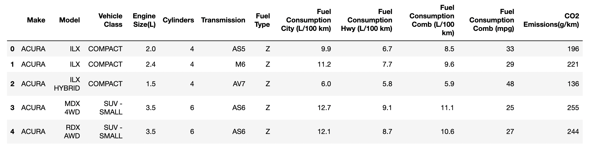
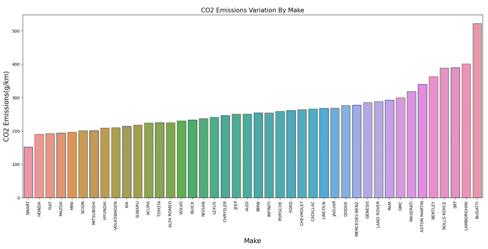
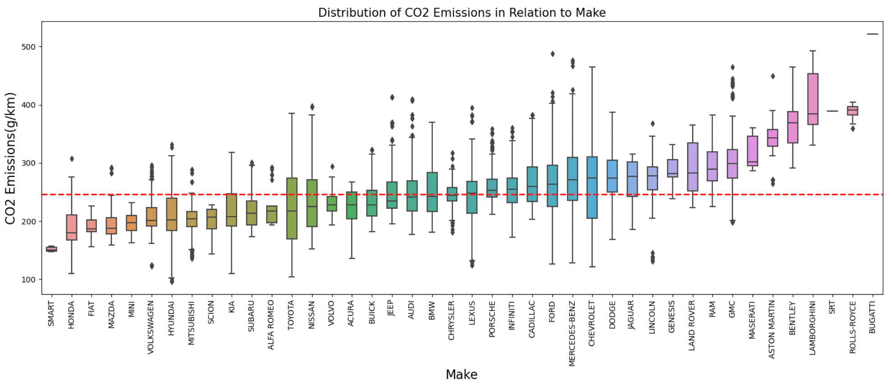
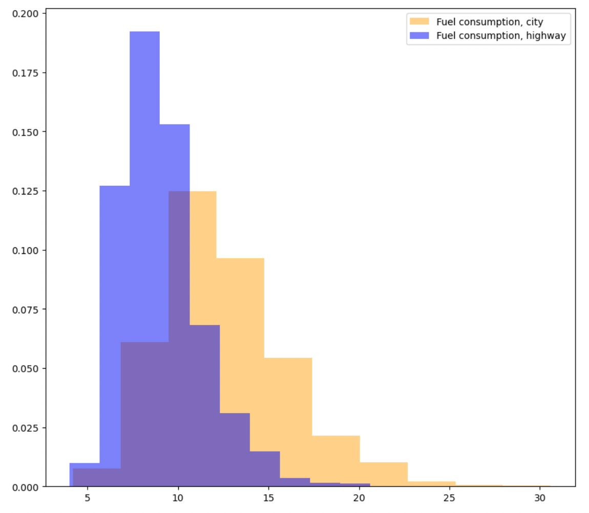
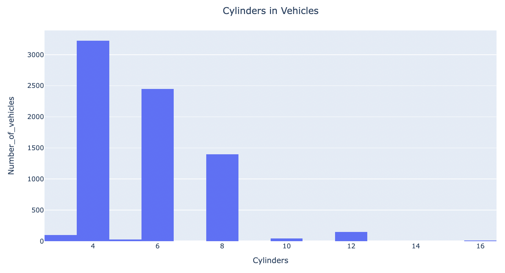
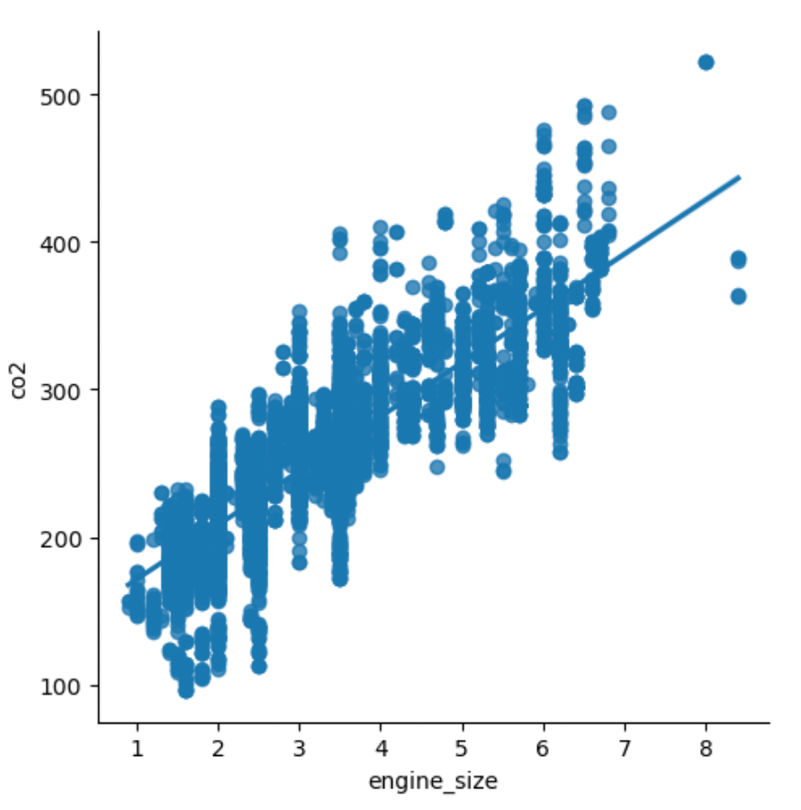

Climate change continues to be one of the largest looming threats we face in society.
There are a myriad contributing factors as well as various potential solutions.
CO2 emissions are one of the leading causes of the acceleration of climate
change, so it may be prescient to understand how our daily habits relate to these emissions,
so that we can aim for solutions towards a more sustainable tomorrow.
In this project, we will be working with a vehicle dataset containing 16 vehicle classes (ex: sedan),
42 makes (ex: Honda), and over 2,000 different models (ex: Accord).
This dataset contains data such as characteristics of a vehicle (size, number of cylinders, etc.)
and its level of emissions.
Our first objective is to conduct an exploratory data analysis so we can better understand our data and
also identify interesting trends and statistics about these classes, makes, and models.
Next, we want to identify which features of a vehicle correlate most strongly with its CO2 emissions.
This will show us which features we can then run a linear regression model on, to see how well we're able to
predict a vehicle's emissions.
We'll use Python, Pandas, Scikit-learn, and other libraries to help us accomplish this.
Here's a quick look at what the data's format looks like:

After getting a brief look at the data by using various Pandas methods
(such as .head, .describe, etc.), we conducted an exploratory data analysis
to do a deeper dive into the data.
One of the first questions we wanted to answer was: which vehicle makes perform the best and the worst in
terms of CO2 emissions? This chart below helps us answer that. We see that Smart, Honda, and Fiat
are the best performers; and Bugatti, Lamborghini, and SRT are the worst.

Next, we'll get a more detailed look at this same comparison by looking at the
box plots for each vehicle make. This lets us take a look at the median emissions for
each vehicle make as well as its interquartile range (IQR). And then we can
compare that to the sample median of CO2 emissions across all vehicles
(represented by the red dotted line.)
(To see further explanations for the boxplots and the IQR, see the Jupyter notebook
here .)

Next, we explored other features such as a vehicle's fuel consumption in the city
vs. on the highway (bottom-left chart) and the number of cylinders in a vehicle (bottom-right chart).
We see that fuel consumption is higher in the city, and that the most common
number of cylinders in a vehicle are 4 and 6.


After finishing the EDA, we then wanted to build a linear regression model to make predictions
on a vehicle's CO2 emissions based on its other features. First,
we looked for relationships between the features of our data.
In the bottom-left chart, we have a heatmap
of the correlations between our different vehicle features. We see that
CO2 emissions are most strongly correlated with engine size and fuel consumption.
And in the bottom-right chart, we have a scatter plot to show the relationship between
each vehicle's engine size and its CO2 emissions,
with a best-fit line drawn. Engine size will be the first feature we will use to make our
predictions.


We first
split our data into a training set and test set.
After training our model on the training set,
we make our test predictions and then evaluate the model's performance.
Our simple linear regression model achieved a 64% accuracy in predicting a vehicle's CO2 emissions
from its engine size.
- R2 score: 0.64
- Mean absolute error: 22.69
- Mean squared error: 895.56
- Root mean squared error: 29.93
- R2 score: 0.86
- Mean absolute error: 13.15
- Mean squared error: 421.15
- Root mean squared error: 20.52
Click here to see the full
analysis in the Jupyter notebook.
Otherwise, we have listed a summary of our findings below.
Summary of findings:
Findings from our analysis:
- The most popular vehicle models are the Ford F-150 followed by the Ford Mustang.
- The most popular vehicle makes are Ford, Chevrolet, and BMW.
- The most popular vehicle classes are small SUVs and mid-size sedans.
- Car makes with the least CO2 emissions are Smart, Honda, and Fiat.
- Car makes with the most CO2 emissions are Bugatti, Rolls-Royce, (Dodge) SRT, and Lamborghini.
- Vehicle classes with the least emissions are small station wagons and compacts.
- Vehicle classes with the most emissions are cargo vans and passenger vans.
- 43.6% of vehicles have 4 cylinders, 33.1% have 6 cylinders, and 19% have 8 cylinders.
- 16% of cars have a manual transmission.
- The most used fuel types are regular gasoline and premium gasoline.
- The features of a car most strongly associated with CO2 emissions are engine size, number of cylinders, and fuel consumption.
Results from our predictions:
- Our simple linear regression model used engine size to predict CO2 emission
levels. This model achieved a 64% accuracy in its prediction.
- Our multiple linear regression model used engine size, number of cylinders,
and combined fuel consumption to predict CO2 emission levels. This model achieved
an 86% accuracy in its prediction.
- The most popular vehicle models are the Ford F-150 followed by the Ford Mustang.
- The most popular vehicle makes are Ford, Chevrolet, and BMW.
- The most popular vehicle classes are small SUVs and mid-size sedans.
- Car makes with the least CO2 emissions are Smart, Honda, and Fiat.
- Car makes with the most CO2 emissions are Bugatti, Rolls-Royce, (Dodge) SRT, and Lamborghini.
- Vehicle classes with the least emissions are small station wagons and compacts.
- Vehicle classes with the most emissions are cargo vans and passenger vans.
- 43.6% of vehicles have 4 cylinders, 33.1% have 6 cylinders, and 19% have 8 cylinders.
- 16% of cars have a manual transmission.
- The most used fuel types are regular gasoline and premium gasoline.
- The features of a car most strongly associated with CO2 emissions are engine size, number of cylinders, and fuel consumption.
- Our simple linear regression model used engine size to predict CO2 emission levels. This model achieved a 64% accuracy in its prediction.
- Our multiple linear regression model used engine size, number of cylinders, and combined fuel consumption to predict CO2 emission levels. This model achieved an 86% accuracy in its prediction.